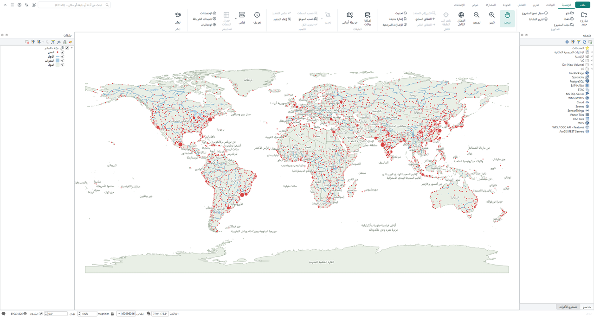

The desktop GIS that is yours. Measure, map and analyse the world. نظم معلومات جغرافية مِلكُك. قِس العالم وارسمه وحلّله.
A modern ribbon interface, full Arabic right-to-left support, and the tools surveyors, engineers and students use every day. No licence that runs out, no credits, no sign-in. واجهة شريطية حديثة، ودعم كامل للعربية من اليمين إلى اليسار، والأدوات التي يستخدمها المسّاحون والمهندسون والطلاب كل يوم. بلا رخصة تنتهي، ولا رصيد (credits)، ولا تسجيل دخول.

Move without losing anything, and go back any time.انتقل دون أن تخسر شيئًا، وعُد متى شئت.
Your projects, symbols, scripts and models come with you. Items marked 0.3 are in the next release. مشاريعك ورموزك وسكربتاتك ونماذجك تنتقل معك. العناصر المعلَّمة بـ 0.3 قادمة في الإصدار التالي.
Open .aprx, .mapx, .lyrx and .mxdافتح aprx وmapx وlyrx وmxd
Layers, groups, colours, labels and definition queries. ArcMap symbology too (0.3): 99.9% of renderers matched on 1,307 real layers.الطبقات والمجموعات والألوان والتسميات والفلاتر، ورموز ArcMap أيضًا (0.3): تطابق نوع الترميز في 99.9% من 1,307 طبقات حقيقية.
Run your arcpy scriptsشغّل سكربتات arcpy الخاصة بك
About 200 arcpy functions (cursors, geometry, Buffer, Clip, Dissolve, Spatial Join…) on shapefile, GeoPackage and File Geodatabase. No licence needed.نحو 200 دالة من arcpy (Cursors والهندسة وBuffer وClip وDissolve وSpatial Join…) على shp وGeoPackage وFile Geodatabase، دون رخصة.
Readiness scanفحص الجاهزية للانتقال
Point it at your folders: every map, script and model is checked and you get a report of what opens 100%, what changes and what is missing.اختر مجلداتك: تُفحص كل خريطة وسكربت ونموذج، وتحصل على تقرير بما سيفتح 100% وما سيتغير وما ينقص.
ModelBuilder modelsنماذج ModelBuilder
Models in .atbx toolboxes become models in the Biruni toolbox. Steps that cannot be converted are kept as notes, never dropped silently.تتحول النماذج الموجودة في atbx إلى نماذج في صندوق الأدوات، وتبقى الخطوة التي لا يمكن تحويلها ملاحظةً ظاهرة، ولا تُحذف دون علمك.
Save back for ArcGIS Proاحفظ لـ ArcGIS Pro مجددًا
Write .aprx, .mapx and .lyrx with symbols, labels and layouts, checked by opening them in ArcGIS Pro. Half the team can stay on Pro.احفظ aprx وmapx وlyrx بالرموز والتسميات والمخططات، وقد تحققنا منها بفتحها في ArcGIS Pro نفسه؛ فيمكن لنصف الفريق البقاء على Pro.
Your company's ArcGIS servicesخدمات ArcGIS في شركتك
Connect to ArcGIS Server, Portal or Online, edit feature services, or take a layer offline and sync it back with conflict checks.اتصل بـ ArcGIS Server أو Portal أو Online، وعدّل الخدمات، أو انقل الطبقة للعمل دون اتصال ثم زامن تعديلاتك مع كشف التعارضات.
Everything you need, where you expect it.كل ما تحتاجه، حيث تتوقعه.
A familiar ribbon, a search box that finds any tool (type an ArcGIS tool name too), and tools made for real projects.شريط مألوف، ومربع بحث يجد أي أداة (حتى باسمها في ArcGIS)، وأدوات مصممة للمشاريع الحقيقية.
Project foldersالمشروع مجلد واحد
Map, project database, data, outputs and exports kept together. Copy all data in with one click, or package as ZIP.الخريطة وقاعدة بيانات المشروع والبيانات والمخرجات في مكان واحد. انسخ كل البيانات إليه بنقرة، أو احزمه في ملف ZIP.
Time machineآلة الزمن
Every save is a version you can restore. In 0.3: if the power goes out, your unsaved edits come back.كل حفظ نسخة يمكنك الرجوع إليها. وفي 0.3: إذا انقطعت الكهرباء تعود التعديلات غير المحفوظة.
CAD and surveyالكاد والمساحة
DXF to GIS with texts, blocks, true arcs and Arabic SHX fonts. Helmert/affine fit, COGO, parcel subdivision, deeds to parcels.من DXF إلى GIS بالنصوص والبلوكات والأقواس الحقيقية وخطوط SHX العربية، والتوقيع بهلمرت والأفيني، وCOGO، وتقسيم القطع، ومن نص الصك إلى القطعة.
Check my dataافحص بياناتي
One scan of every layer with safe fixes, topology rules and attribute rules. In 0.3: plain-language explanations of errors.فحص واحد لكل الطبقات مع إصلاحات آمنة، وقواعد الطوبولوجيا، وقواعد الخصائص. وفي 0.3: شرح الأخطاء بلغة بسيطة.
Engineering officeالمكتب الهندسي
Guess the coordinate system, delivery spec and check, compare versions, bill of quantities, setbacks, scanned plans to parcels.تعرّف نظام الإحداثيات، ومواصفات التسليم وفحصها، ومقارنة نسختين، وجدول الكميات، والارتدادات، والقطع من المخطط الممسوح ضوئيًا.
Hydrology, terrain, LiDARالهيدرولوجيا والتضاريس والليدار
Streams and watersheds in one click and all SAGA and GRASS tools. In 0.3: ground surface from drone points, stockpile volumes and profiles.المجاري والأحواض بنقرة، وكل أدوات SAGA وGRASS. وفي 0.3: سطح الأرض من نقاط الطائرات المسيّرة، وأحجام الردم والحفر، والقطاعات.
Spatial statisticsالإحصاء المكاني
Hot spots, clusters and outliers, regression and an advisor that suggests the right test for your question.النقاط الساخنة والعناقيد والقيم الشاذة والانحدار، ومستشار يقترح الاختبار المناسب لسؤالك.
Map sheets and booksلوحات وأطالس
A finished map sheet in one click with grid, north arrow, scale and legend, Arabic-Indic digits included. Web maps and KMZ too.لوحة خريطة جاهزة بنقرة: شبكة وسهم شمال ومقياس ومفتاح، وبالأرقام العربية أيضًا، إضافة إلى خرائط الويب وKMZ.
Right-to-left done rightالعربية كما ينبغي
Correct Arabic, Persian and Urdu labels, even on curved lines; Hijri and other calendars; legacy Arabic CAD fonts repaired.تسميات عربية وفارسية وأردية صحيحة حتى على الخطوط المنحنية، والتقويم الهجري وغيره، وإصلاح خطوط الكاد العربية القديمة.
Any phone becomes a field device. No app, no cloud account.أي هاتف يصبح جهازًا ميدانيًا، بلا تطبيق ولا حساب سحابي.
- Field photos and formsصور ميدانية ونماذجScan a code; photos and answers land on your map, straight from phone to computer.امسح الرمز، فتصل الصور والإجابات إلى خريطتك مباشرة من الهاتف إلى الحاسوب.
- Live GPS and team on the mapGPS مباشر والفريق على الخريطةTrack the team, guide someone to a point or a boundary, average readings for better positions.تابع الفريق، ووجّه أحدهم إلى نقطة أو حدود، واحسب متوسط القراءات لموقع أدق.
- Share your map liveشارك خريطتك مباشرةSomeone opens a link and sees your map as you work.يفتح أحدهم رابطًا فيرى خريطتك أثناء عملك.
- Living QR on printed maps and sealed deliverablesرمز QR حي على الخرائط المطبوعة، وختم لملفات التسليمA printed map that opens online, and a signature that shows if a delivered file was changed.خريطة مطبوعة تُفتح على الإنترنت، وتوقيع يكشف أي تعديل على ملف بعد تسليمه.

No account. No licence server. Nothing sent anywhere.بلا حساب، ولا خادم رخص، ولا شيء يُرسل إلى أي مكان.
Biruni connects to the internet only for what you ask for (basemaps, open-data downloads) and once a day to check for a new version.لا يتصل البيروني بالإنترنت إلا لما تطلبه أنت (خرائط الأساس وتنزيل البيانات المفتوحة)، ومرة في اليوم للتحقق من وجود إصدار جديد.
| Biruni GIS | Typical commercial desktop GISبرامج GIS التجارية المعتادة | |
|---|---|---|
| Priceالسعر | Free, foreverمجاني للأبد | Yearly licence + extensions + creditsرخصة سنوية + إضافات + credits |
| Sign-inتسجيل الدخول | Neverأبدًا | Named user accountحساب باسم المستخدم |
| Works offlineمن غير إنترنت | Alwaysدائمًا | Licence must be checked outيجب حجز الرخصة أولًا |
| Spatial, 3D and network analysisالتحليل المكاني وثلاثي الأبعاد والشبكات | Includedموجودة | Paid extensionsإضافات مدفوعة |
| Field data collectionجمع البيانات من الميدان | Any phone browser, no cloudمن متصفح أي هاتف، دون سحابة | Mobile user typesاشتراك لكل مستخدم ميداني |
| Arabic interfaceالواجهة العربية | Full right-to-leftكاملة من اليمين إلى اليسار | Variesتختلف |
| Source codeالكود المصدري | Open (GPL)مفتوح (GPL) | Closedمغلق |
Get Biruni GISنزّل Biruni GIS
Download the installer from the releases page and run it. An Arabic PDF guide is attached to each release.نزّل ملف التثبيت من صفحة الإصدارات وشغّله، ومع كل إصدار دليل PDF بالعربية.
- Windows 10 or 11, 64-bitويندوز 10 أو 11، 64-bit
- About 2.5 GB of disk spaceنحو 2.5 جيجابايت من مساحة القرص
- Light mode for older laptops (0.3)وضع خفيف للحواسيب القديمة (0.3)
- Keeps its own settings: never touches other GIS installsإعداداته مستقلة: لا يمس أي برنامج GIS آخر مثبت
Good to knowما يهمك أن تعرفه
Is it really free?هل هو مجاني فعلًا؟
Yes. Biruni GIS is open source under the GNU GPL. You can use it at work, at university and at home, on as many computers as you like.نعم. البيروني مفتوح المصدر برخصة GNU GPL، ويمكنك استخدامه في العمل والجامعة والمنزل، على أي عدد من الأجهزة.
Can it replace ArcGIS Pro for me?هل يمكن أن يكون بديلًا لـ ArcGIS Pro عندي؟
For most daily mapping, editing, analysis and survey work, yes. Some ArcGIS-only data features (topology rules stored in a geodatabase, attribute rules, versioning) are not supported yet. Run the readiness scan on your own folders to see exactly what will work.في معظم أعمال الخرائط والتحرير والتحليل والمساحة اليومية، نعم. بعض خصائص ArcGIS غير مدعومة بعد، مثل قواعد الطوبولوجيا المخزنة في الـ geodatabase، وقواعد الخصائص، والـ Versioning. شغّل فحص الجاهزية على مجلداتك لتعرف بدقة ما الذي سيعمل.
Will it change my existing QGIS or ArcGIS?هل سيغيّر شيئًا في QGIS أو ArcGIS لديّ؟
No. Biruni keeps its own profile in %APPDATA%\Biruni GIS and opens your ArcGIS files without changing them.لا. يحفظ البيروني إعداداته في %APPDATA%\Biruni GIS بشكل مستقل، ويفتح ملفات ArcGIS دون تعديلها.
Why does Windows warn me when I run the installer?لماذا يحذرني ويندوز عند تشغيل ملف التثبيت؟
The installer is not code-signed yet. Choose “More info”, then “Run anyway”. Signing is being set up with SignPath.ملف التثبيت غير موقّع رقميًا بعد. اختر «More info» ثم «Run anyway». يجري إعداد التوقيع مع SignPath.
How can I help?كيف أساعد؟
Report problems or ideas on GitHub Issues, improve a translation, or tell a colleague.أبلغ عن مشكلة أو فكرة على GitHub Issues، أو حسّن ترجمة، أو أخبر زميلًا عنه.